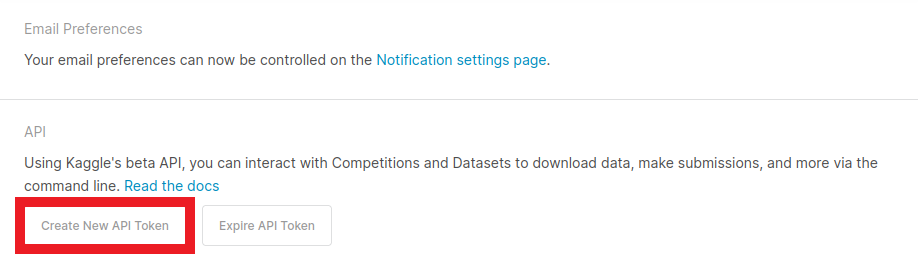
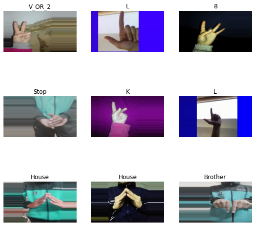
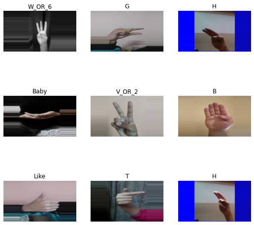
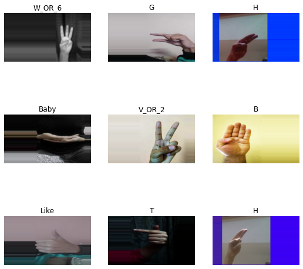
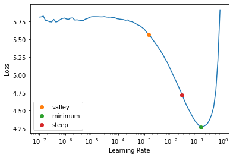
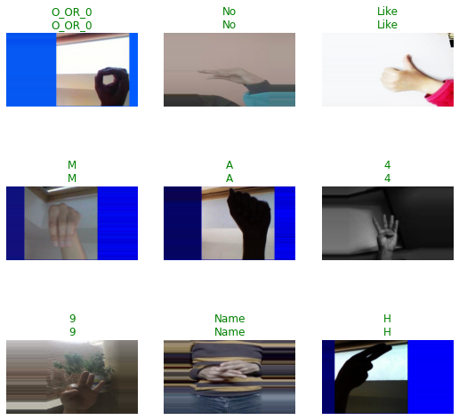
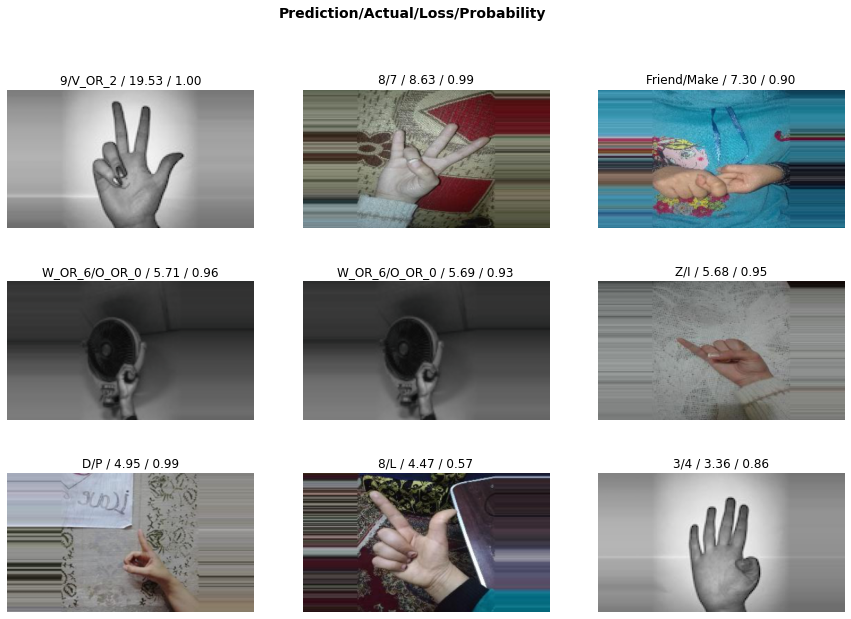

Fastai to Unity Beginner Tutorial Pt. 1
- Introduction
- Overview
- Install Dependencies
- Configure Kaggle API
- Download Dataset
- Inspect Dataset
- Define Dataloaders
- Define Learner
- Inspect Trained Model
- Implement Processing Steps
- Export the Model
- Summary
Introduction
In this tutorial series, we will walk through training an image classifier using the fastai library and implementing it in a Unity game engine project using the Barracuda inference library. Check out this post for more information about Barracuda. We will then build the Unity project to run in a web browser and host it using GitHub Pages.
The tutorial uses this American Sign Language (ASL) dataset from Kaggle but feel free to follow along with a different dataset. The dataset contains sample images for digits 1-9, letters A-Z, and some common words. One could use a model trained on this dataset to map hand gestures to user input or make an ASL education game.
In-Browser Demo: ASL Classifier
Overview
Part 1 covers how to finetune a ResNet model for image classification using the fastai library and export it to ONNX format. The training code is available in the Jupyter notebook linked below, and links for running the notebook on Google Colab and Kaggle are below as well.
| Jupyter Notebook | Colab | Kaggle |
|---|---|---|
| GitHub Repository | Open In Colab | Open in Kaggle |
Install Dependencies
The training code requires PyTorch for the fastai library, the fastai library itself for training, and the Kaggle API Python package for downloading the dataset. Google Colab uses an older version of Pillow, so update that package when training there.
Uncomment the cell below if running on Google Colab or Kaggle
# %%capture
# !pip3 install -U torch torchvision torchaudio
# !pip3 install -U fastai
# !pip3 install -U kaggle
# !pip3 install -U PillowNote for Colab: You must restart the runtime in order to use newly installed version of Pillow.
Import all fastai computer vision functionality
from fastai.vision.all import *Configure Kaggle API
The Kaggle API tool requires an API Key for a Kaggle account. Sign in or create a Kaggle account using the link below, then click the Create New API Token button.
- Kaggle Account Settings: https://www.kaggle.com/me/account

Kaggle will generate and download a kaggle.json file containing your username and new API token. Paste the values for each in the code cell below.
Enter Kaggle username and API token
creds = '{"username":"","key":""}'Save Kaggle credentials if none are present * Source: https://github.com/fastai/fastbook/blob/master/09_tabular.ipynb
cred_path = Path('~/.kaggle/kaggle.json').expanduser()
# Save API key to a json file if it does not already exist
if not cred_path.exists():
cred_path.parent.mkdir(exist_ok=True)
cred_path.write_text(creds)
cred_path.chmod(0o600)Import Kaggle API
from kaggle import api(Optional) Define method to display default function arguments
The code cell below defines a method to display the default arguments for a specified function. It’s not required, but I find it convenient for creating quick references in notebooks.
import inspect
import pandas as pd
pd.set_option('max_colwidth', None)
pd.set_option('display.max_rows', None)
pd.set_option('display.max_columns', None)
def inspect_default_args(target, annotations: bool=False):
# Get the argument names
args = inspect.getfullargspec(target).args
# Get the default values
defaults = inspect.getfullargspec(target).defaults
index = ["Default Value"]
# Pad defaults
defaults = [None]*(len(args)-len(defaults)) + list(defaults)
if annotations:
index.append("Annotation")
annotations = inspect.getfullargspec(target).annotations.values()
# Pad annotations
annotations = [None]*(len(args)-len(annotations)) + list(annotations)
default_args = {arg:[df, annot] for arg,df,annot in zip(args, defaults, annotations)}
else:
default_args = {arg:[default] for arg,default in zip(args, defaults)}
return pd.DataFrame(default_args, index=index).TDownload Dataset
Now that we have our Kaggle credentials set, we need to define the dataset and where to store it.
Define path to dataset
We’ll use the default archive and data folders for the fastai library to store the compressed and uncompressed datasets.
kaggle_dataset = 'belalelwikel/asl-and-some-words'
archive_dir = URLs.path()
dataset_dir = archive_dir/'../data'
dataset_name = 'asl-and-some-words'
archive_path = Path(f'{archive_dir}/{dataset_name}.zip')
dataset_path = Path(f'{dataset_dir}/{dataset_name}')Define method to extract the dataset from an archive file
def file_extract(fname, dest=None):
"Extract `fname` to `dest` using `tarfile` or `zipfile`."
if dest is None: dest = Path(fname).parent
fname = str(fname)
if fname.endswith('gz'): tarfile.open(fname, 'r:gz').extractall(dest)
elif fname.endswith('zip'): zipfile.ZipFile(fname ).extractall(dest)
else: raise Exception(f'Unrecognized archive: {fname}')Download the dataset if it is not present
The archive file is over 2GB, so we don’t want to download it more than necessary.
if not archive_path.exists():
api.dataset_download_cli(kaggle_dataset, path=archive_dir)
file_extract(fname=archive_path, dest=dataset_path)Inspect Dataset
We can start inspecting the dataset once it finishes downloading.
Inspect the dataset path
The training data is in a subfolder named ASL, and there are over 200,000 samples.
dataset_path.ls() (#1) [Path('/home/innom-dt/.fastai/archive/../data/asl-and-some-words/ASL')]Get image file paths
files = get_image_files(dataset_path/"ASL")
len(files) 203000Inspect files
The dataset indicates the object class in both the folder and file names.
files[0], files[-1] (Path('/home/innom-dt/.fastai/archive/../data/asl-and-some-words/ASL/J/J1491.jpg'),
Path('/home/innom-dt/.fastai/archive/../data/asl-and-some-words/ASL/E/E1063.jpg'))Inspect class folder names
There are 51 class folders, and the dataset does not predefine a training-validation split.
folder_names = [path.name for path in Path(dataset_path/'ASL').ls()]
folder_names.sort()
print(f"Num classes: {len(folder_names)}")
pd.DataFrame(folder_names) Num classes: 51| 0 | |
|---|---|
| 0 | 1 |
| 1 | 3 |
| 2 | 4 |
| 3 | 5 |
| 4 | 7 |
| 5 | 8 |
| 6 | 9 |
| 7 | A |
| 8 | B |
| 9 | Baby |
| 10 | Brother |
| 11 | C |
| 12 | D |
| 13 | Dont_like |
| 14 | E |
| 15 | F |
| 16 | Friend |
| 17 | G |
| 18 | H |
| 19 | Help |
| 20 | House |
| 21 | I |
| 22 | J |
| 23 | K |
| 24 | L |
| 25 | Like |
| 26 | Love |
| 27 | M |
| 28 | Make |
| 29 | More |
| 30 | N |
| 31 | Name |
| 32 | No |
| 33 | O_OR_0 |
| 34 | P |
| 35 | Pay |
| 36 | Play |
| 37 | Q |
| 38 | R |
| 39 | S |
| 40 | Stop |
| 41 | T |
| 42 | U |
| 43 | V_OR_2 |
| 44 | W_OR_6 |
| 45 | With |
| 46 | X |
| 47 | Y |
| 48 | Yes |
| 49 | Z |
| 50 | nothing |
Inspect one of the training images
The sample images all have a resolution of 200x200.
import PIL
img = PIL.Image.open(files[0])
print(f"Image Dims: {img.shape}")
img Image Dims: (200, 200)
Define Dataloaders
Next, we need to define the Transforms for the DataLoaders object.
Define target input dimensions
The Unity project will take input from a webcam, and most webcams don’t have a square aspect ratio like the training samples. We will need to account for this to get more accurate predictions.
We can train with a square aspect ratio and crop the webcam input in Unity, but that might make users feel cramped when using the application.
Alternatively, we can expand the training images to a more typical aspect ratio like 4:3 or 16:9. This approach will allow us to use the entire webcam input, so we’ll go with this one.
I have a separate tutorial for cropping images on the GPU in Unity for anyone that wants to try the other approach.
Below are some sample input dimensions in different aspect ratios.
# size_1_1 = (224, 224)
# size_3_2 = (224, 336)
# size_4_3 = (216, 288)
size_16_9 = (216, 384)
# size_16_9_l = (288, 512)Define Transforms
Something else to consider is that the webcam input in Unity mirrors the actual image. Mirrored input would likely not be an issue for something like a pet classifier, but hand orientation matters for ASL. We either need to flip the input image each time in Unity, or we can train the model with pre-flipped images. It is easier to mirror the training images, so we’ll use the FlipItem transform with a probability of 1.0 to flip every training sample.
I have a separate tutorial covering how to flip images on the GPU in Unity for anyone that wants to try that approach.
Since we are resizing to a different aspect ratio, we need to choose a padding method. The default reflection padding might add more fingers, changing an image’s meaning. The zeros padding option might work, but most user backgrounds will not be pure black. Therefore, we’ll go with border padding.
We can add some batch transforms like tweaking the contrast, saturation, hue, zoom, brightness, and warping to help crappify the images. However, we need to disable the do_flip and max_rotate options in aug_transforms.
inspect_default_args(aug_transforms)| Default Value | |
|---|---|
| mult | 1.0 |
| do_flip | True |
| flip_vert | False |
| max_rotate | 10.0 |
| min_zoom | 1.0 |
| max_zoom | 1.1 |
| max_lighting | 0.2 |
| max_warp | 0.2 |
| p_affine | 0.75 |
| p_lighting | 0.75 |
| xtra_tfms | None |
| size | None |
| mode | bilinear |
| pad_mode | reflection |
| align_corners | True |
| batch | False |
| min_scale | 1.0 |
item_tfms = [FlipItem(p=1.0), Resize(size_16_9, method=ResizeMethod.Pad, pad_mode=PadMode.Border)]
batch_tfms = [
Contrast(max_lighting=0.25),
Saturation(max_lighting=0.25),
Hue(max_hue=0.05),
*aug_transforms(
size=size_16_9,
mult=1.0,
do_flip=False,
flip_vert=False,
max_rotate=0.0,
min_zoom=0.5,
max_zoom=1.5,
max_lighting=0.5,
max_warp=0.2,
p_affine=0.0,
pad_mode=PadMode.Border)
]Define batch size
bs = 128Define DataLoaders object
We can use the from_folder method to instantiate the DataLoaders object.
inspect_default_args(ImageDataLoaders.from_folder)| Default Value | |
|---|---|
| cls | None |
| path | None |
| train | train |
| valid | valid |
| valid_pct | None |
| seed | None |
| vocab | None |
| item_tfms | None |
| batch_tfms | None |
| bs | 64 |
| val_bs | None |
| shuffle | True |
| device | None |
dls = ImageDataLoaders.from_folder(
path=dataset_path/'ASL',
valid_pct=0.2,
bs=bs,
item_tfms=item_tfms,
batch_tfms=batch_tfms
)Verify DataLoaders object
Let’s verify the DataLoaders object works as expected before training a model.
dls.train.show_batch()
We can see that the DataLoaders object applies the transforms to the training split, including mirroring the image. However, it does not appear to mirror images from the validation split.
dls.valid.show_batch()
We can get around this by using a solution provided on the fastai forums to apply the training split transforms to the validation split. It is not strictly necessary to mirror the validation split, but the accuracy metrics would be confusing during training without it.
Apply training split transforms to validation split
with dls.valid.dataset.set_split_idx(0): dls[1].show_batch()
Define Learner
Now we need to define the Learner object for training the model.
Inspect Learner parameters
inspect_default_args(vision_learner)| Default Value | |
|---|---|
| dls | None |
| arch | None |
| normalize | True |
| n_out | None |
| pretrained | True |
| loss_func | None |
| opt_func | <function Adam at 0x7fa5e274a560> |
| lr | 0.001 |
| splitter | None |
| cbs | None |
| metrics | None |
| path | None |
| model_dir | models |
| wd | None |
| wd_bn_bias | False |
| train_bn | True |
| moms | (0.95, 0.85, 0.95) |
| cut | None |
| n_in | 3 |
| init | <function kaiming_normal_ at 0x7fa60b397be0> |
| custom_head | None |
| concat_pool | True |
| lin_ftrs | None |
| ps | 0.5 |
| pool | True |
| first_bn | True |
| bn_final | False |
| lin_first | False |
| y_range | None |
Define model
I recommend sticking with a ResNet18 or ResNet34 model, as the larger models can significantly lower frame rates.
model = resnet18Define metrics
metrics = [error_rate, accuracy]Define Learner object
learn = vision_learner(dls, model, metrics=metrics).to_fp16()Find learning rate
inspect_default_args(learn.lr_find)| Default Value | |
|---|---|
| self | None |
| start_lr | 0.0 |
| end_lr | 10 |
| num_it | 100 |
| stop_div | True |
| show_plot | True |
| suggest_funcs | <function valley at 0x7fa5e24996c0> |
Define suggestion methods
suggest_funcs = [valley, minimum, steep]with dls.valid.dataset.set_split_idx(0): learn.lr_find(suggest_funcs=suggest_funcs)
Define learning rate
lr = 2e-3
lr 0.002Define number of epochs
epochs = 3Fine tune model
After picking a learning rate, we can train the model for a few epochs. Training can take a while on Google Colab and Kaggle.
inspect_default_args(learn.fine_tune)| Default Value | |
|---|---|
| self | None |
| epochs | None |
| base_lr | 0.002 |
| freeze_epochs | 1 |
| lr_mult | 100 |
| pct_start | 0.3 |
| div | 5.0 |
| lr_max | None |
| div_final | 100000.0 |
| wd | None |
| moms | None |
| cbs | None |
| reset_opt | False |
with dls.valid.dataset.set_split_idx(0): learn.fine_tune(epochs, base_lr=lr)| epoch | train_loss | valid_loss | error_rate | accuracy | time |
|---|---|---|---|---|---|
| 0 | 0.365705 | 0.175888 | 0.056305 | 0.943695 | 04:52 |
| epoch | train_loss | valid_loss | error_rate | accuracy | time |
|---|---|---|---|---|---|
| 0 | 0.038334 | 0.021014 | 0.008103 | 0.991897 | 04:56 |
| 1 | 0.012614 | 0.011383 | 0.004236 | 0.995764 | 04:59 |
| 2 | 0.006508 | 0.006591 | 0.003325 | 0.996675 | 04:55 |
Inspect Trained Model
Once the model finishes training, we can test it on a sample image and see where it struggles.
Select a test image
import PILtest_file = files[0]
test_file.name 'J1491.jpg'test_img = PIL.Image.open(test_file)
test_imgMake a prediction on a single image using a fastai.vision.core.PILImage
Remember that we need to flip the test image before feeding it to the model.
learn.predict(PILImage(test_img.transpose(Image.Transpose.FLIP_LEFT_RIGHT))) ('J',
TensorBase(22),
TensorBase([9.6170e-14, 7.7060e-13, 2.5787e-13, 1.1222e-13, 1.5709e-10, 3.6805e-11,
1.7642e-11, 2.3571e-13, 3.5861e-15, 9.8273e-13, 4.1524e-14, 1.3218e-12,
7.3592e-14, 3.8404e-14, 4.9230e-12, 8.4399e-12, 2.0167e-11, 3.2757e-13,
4.0114e-10, 2.3624e-11, 8.3717e-14, 1.9143e-07, 1.0000e+00, 9.7685e-14,
9.4480e-15, 3.3952e-15, 9.4246e-12, 2.3079e-12, 1.6612e-15, 6.6745e-14,
3.9778e-14, 2.2675e-11, 1.7859e-14, 1.7659e-11, 5.1701e-11, 8.4209e-14,
4.6891e-11, 1.3487e-11, 1.0827e-11, 1.0881e-10, 2.6260e-09, 4.2682e-13,
3.1842e-13, 7.4326e-13, 4.8983e-13, 2.0801e-13, 9.1052e-14, 1.0467e-08,
2.3752e-14, 1.0124e-09, 6.7431e-11]))Make predictions for a group of images
with dls.valid.dataset.set_split_idx(0): learn.show_results()
Define an Interpretation object
with dls.valid.dataset.set_split_idx(0): interp = Interpretation.from_learner(learn)Plot top losses
with dls.valid.dataset.set_split_idx(0): interp.plot_top_losses(k=9, figsize=(15,10))
Implement Processing Steps
When we are satisfied with the model, we can start preparing for implementing it in Unity. We will need to apply the same preprocessing and post-processing in Unity that fastai applies automatically. We will verify we understand the processing steps by implementing them in Python first.
Inspect the after_item pipeline
We don’t need to worry about flipping or padding the image in Unity with the current training approach.
learn.dls.after_item Pipeline: FlipItem -- {'p': 1.0} -> Resize -- {'size': (384, 216), 'method': 'pad', 'pad_mode': 'border', 'resamples': (<Resampling.BILINEAR: 2>, 0), 'p': 1.0} -> ToTensorInspect the after_batch pipeline
The after_batch pipeline first scales the image color channel values from \([0,255]\) to \([0,1]\). Unity already uses the range \([0,1]\), so we don’t need to implement this step. We also don’t need to implement any of the image augmentations. However, we do need to normalize the image using the ImageNet stats.
learn.dls.after_batch Pipeline: IntToFloatTensor -- {'div': 255.0, 'div_mask': 1} -> Warp -- {'magnitude': 0.2, 'p': 1.0, 'draw_x': None, 'draw_y': None, 'size': (216, 384), 'mode': 'bilinear', 'pad_mode': 'border', 'batch': False, 'align_corners': True, 'mode_mask': 'nearest'} -> Contrast -- {'max_lighting': 0.25, 'p': 1.0, 'draw': None, 'batch': False} -> Saturation -- {'max_lighting': 0.25, 'p': 1.0, 'draw': None, 'batch': False} -> Hue -- {'p': 1.0} -> Brightness -- {'max_lighting': 0.5, 'p': 1.0, 'draw': None, 'batch': False} -> Normalize -- {'mean': tensor([[[[0.4850]],
[[0.4560]],
[[0.4060]]]], device='cuda:0'), 'std': tensor([[[[0.2290]],
[[0.2240]],
[[0.2250]]]], device='cuda:0'), 'axes': (0, 2, 3)}Reset test image
test_img = PIL.Image.open(test_file)
test_img
test_img = test_img.transpose(Image.Transpose.FLIP_LEFT_RIGHT)
test_imgtest_img.size (200, 200)min(test_img.size) 200min_dim = test_img.size.index(min(test_img.size))
max_dim = 1 - min_dimtarget_dim = 224Set input dims
inp_dims = [0,0]
inp_dims[min_dim] = target_dim
inp_dims[max_dim] = int(test_img.size[max_dim] / (test_img.size[min_dim]/target_dim))
inp_dims [224, 224]resized_img = test_img.resize(inp_dims)
resized_imgConvert image to tensor
img_tensor = tensor(resized_img).permute(2, 0, 1)
img_tensor.shape, img_tensor (torch.Size([3, 224, 224]),
tensor([[[ 0, 0, 0, ..., 1, 0, 0],
[ 0, 4, 2, ..., 9, 2, 0],
[ 5, 82, 99, ..., 74, 8, 0],
...,
[ 3, 127, 154, ..., 141, 0, 3],
[ 3, 102, 125, ..., 120, 0, 0],
[ 0, 0, 4, ..., 0, 1, 0]],
[[ 4, 1, 2, ..., 0, 2, 5],
[ 2, 1, 0, ..., 0, 0, 5],
[ 0, 75, 91, ..., 63, 1, 1],
...,
[ 3, 126, 150, ..., 151, 0, 0],
[ 7, 105, 122, ..., 127, 1, 0],
[ 8, 5, 3, ..., 4, 6, 2]],
[[253, 254, 255, ..., 253, 255, 254],
[244, 220, 199, ..., 209, 237, 255],
[212, 222, 180, ..., 188, 211, 251],
...,
[196, 225, 171, ..., 238, 204, 255],
[207, 247, 222, ..., 242, 218, 255],
[223, 203, 193, ..., 219, 247, 254]]], dtype=torch.uint8))Scale tensor values
scaled_tensor = img_tensor.float().div_(255)Prepare imagenet mean values
mean_tensor = tensor(imagenet_stats[0]).view(1,1,-1).permute(2, 0, 1)
mean_tensor.shape, mean_tensor (torch.Size([3, 1, 1]),
tensor([[[0.4850]],
[[0.4560]],
[[0.4060]]]))Prepare imagenet std values
std_tensor = tensor(imagenet_stats[1]).view(1,1,-1).permute(2, 0, 1)
std_tensor.shape, std_tensor (torch.Size([3, 1, 1]),
tensor([[[0.2290]],
[[0.2240]],
[[0.2250]]]))Normalize and batch image tensor
normalized_tensor = (scaled_tensor - mean_tensor) / std_tensor
batched_tensor = normalized_tensor.unsqueeze(dim=0)
batched_tensor.shape, batched_tensor (torch.Size([1, 3, 224, 224]),
tensor([[[[-2.1179, -2.1179, -2.1179, ..., -2.1008, -2.1179, -2.1179],
[-2.1179, -2.0494, -2.0837, ..., -1.9638, -2.0837, -2.1179],
[-2.0323, -0.7137, -0.4226, ..., -0.8507, -1.9809, -2.1179],
...,
[-2.0665, 0.0569, 0.5193, ..., 0.2967, -2.1179, -2.0665],
[-2.0665, -0.3712, 0.0227, ..., -0.0629, -2.1179, -2.1179],
[-2.1179, -2.1179, -2.0494, ..., -2.1179, -2.1008, -2.1179]],
[[-1.9657, -2.0182, -2.0007, ..., -2.0357, -2.0007, -1.9482],
[-2.0007, -2.0182, -2.0357, ..., -2.0357, -2.0357, -1.9482],
[-2.0357, -0.7227, -0.4426, ..., -0.9328, -2.0182, -2.0182],
...,
[-1.9832, 0.1702, 0.5903, ..., 0.6078, -2.0357, -2.0357],
[-1.9132, -0.1975, 0.1001, ..., 0.1877, -2.0182, -2.0357],
[-1.8957, -1.9482, -1.9832, ..., -1.9657, -1.9307, -2.0007]],
[[ 2.6051, 2.6226, 2.6400, ..., 2.6051, 2.6400, 2.6226],
[ 2.4483, 2.0300, 1.6640, ..., 1.8383, 2.3263, 2.6400],
[ 1.8905, 2.0648, 1.3328, ..., 1.4722, 1.8731, 2.5703],
...,
[ 1.6117, 2.1171, 1.1759, ..., 2.3437, 1.7511, 2.6400],
[ 1.8034, 2.5006, 2.0648, ..., 2.4134, 1.9951, 2.6400],
[ 2.0823, 1.7337, 1.5594, ..., 2.0125, 2.5006, 2.6226]]]]))Pass tensor to model
with torch.no_grad():
preds = learn.model(batched_tensor.cuda())
preds TensorBase([[-4.9931e+00, -1.9711e+00, -3.3677e+00, -3.0452e+00, 3.9567e+00,
3.9293e+00, 3.1657e+00, -5.3549e+00, -7.9026e+00, -1.5491e+00,
-2.4086e+00, -2.6251e+00, -4.0321e+00, -7.3666e+00, -1.0557e+00,
-3.2344e-01, 4.7887e+00, -4.8819e+00, 6.5188e+00, 1.1152e+00,
-5.9519e-01, 1.1730e+01, 3.0779e+01, -4.4505e+00, -1.0000e+01,
-9.1124e+00, -3.7176e-01, -4.2437e+00, -8.6924e+00, -1.5119e+00,
-8.4118e+00, 9.1559e-01, -7.6669e+00, 1.7187e+00, 2.0639e+00,
-4.0788e+00, 9.0079e+00, -2.8547e-02, 1.1223e+00, -3.2541e-02,
8.9209e+00, -4.2307e+00, -3.6343e+00, -9.8461e-01, -4.2557e+00,
-2.2238e+00, -5.9167e+00, 7.0386e+00, -7.7322e+00, 4.3321e+00,
-3.1247e-01]], device='cuda:0')Process model output
torch.nn.functional.softmax(preds, dim=1) TensorBase([[2.9133e-16, 5.9815e-15, 1.4800e-15, 2.0433e-15, 2.2450e-12, 2.1844e-12,
1.0179e-12, 2.0287e-16, 1.5878e-17, 9.1219e-15, 3.8617e-15, 3.1101e-15,
7.6160e-16, 2.7138e-17, 1.4940e-14, 3.1072e-14, 5.1585e-12, 3.2557e-16,
2.9103e-11, 1.3097e-13, 2.3678e-14, 5.3343e-09, 1.0000e+00, 5.0120e-16,
1.9486e-18, 4.7354e-18, 2.9607e-14, 6.1632e-16, 7.2077e-18, 9.4674e-15,
9.5424e-18, 1.0727e-13, 2.0099e-17, 2.3949e-13, 3.3822e-13, 7.2685e-16,
3.5069e-10, 4.1729e-14, 1.3190e-13, 4.1563e-14, 3.2148e-10, 6.2438e-16,
1.1337e-15, 1.6041e-14, 6.0902e-16, 4.6457e-15, 1.1568e-16, 4.8942e-11,
1.8828e-17, 3.2679e-12, 3.1415e-14]], device='cuda:0')preds.argmax() TensorBase(22, device='cuda:0')torch.nn.functional.softmax(preds, dim=1)[0][preds.argmax()] TensorBase(1., device='cuda:0')Get the class labels
learn.dls.vocab ['1', '3', '4', '5', '7', '8', '9', 'A', 'B', 'Baby', 'Brother', 'C', 'D', 'Dont_like', 'E', 'F', 'Friend', 'G', 'H', 'Help', 'House', 'I', 'J', 'K', 'L', 'Like', 'Love', 'M', 'Make', 'More', 'N', 'Name', 'No', 'O_OR_0', 'P', 'Pay', 'Play', 'Q', 'R', 'S', 'Stop', 'T', 'U', 'V_OR_2', 'W_OR_6', 'With', 'X', 'Y', 'Yes', 'Z', 'nothing']Get the predicted class label
learn.dls.vocab[torch.nn.functional.softmax(preds, dim=1).argmax()] 'J'Export the Model
The last step is to export the trained model to ONNX format.
Define ONNX file name
onnx_file_name = f"{dataset_path.name}-{learn.arch.__name__}.onnx"
onnx_file_name 'asl-and-some-words-resnet18.onnx'Export trained model to ONNX
We’ll use an older opset_version to ensure the model is compatible with the Barracuda library. We will also unlock the input dimensions for the model to give ourselves more flexibility in Unity. Although, we’ll want to stick close to the training resolution for the best accuracy.
torch.onnx.export(learn.model.cpu(),
batched_tensor,
onnx_file_name,
export_params=True,
opset_version=9,
do_constant_folding=True,
input_names = ['input'],
output_names = ['output'],
dynamic_axes={'input': {2 : 'height', 3 : 'width'}}
)Export class labels
We can export the list of class labels to a JSON file and import it into the Unity project. That way, we don’t have to hardcode them, and we can easily swap in models trained on different datasets.
import json
class_labels = {"classes": list(learn.dls.vocab)}
class_labels_file_name = f"{dataset_path.name}-classes.json"
with open(class_labels_file_name, "w") as write_file:
json.dump(class_labels, write_file)Summary
In this post, we walked through how to finetune a ResNet model for image classification using the fastai library and export it to ONNX format. Part 2 will cover implementing the trained model in a Unity project using the Barracuda library.
Previous: Getting Started With Deep Learning in Unity
Next: Fastai to Unity Tutorial Pt. 2
Project Resources: GitHub Repository